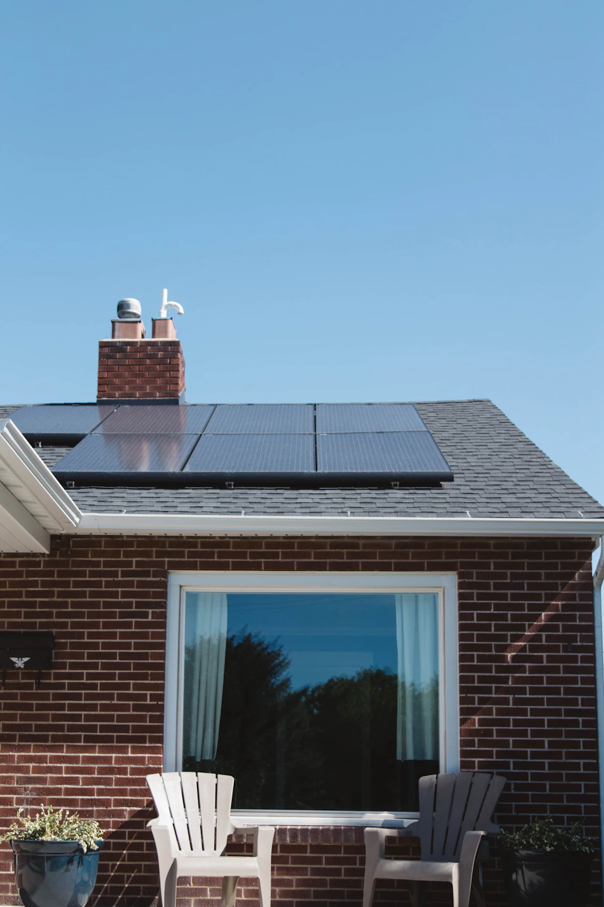

De tu recibo
a una mejor decisión.
Cuéntanos cómo usas la luz. Te ayudamos a entender qué puede cambiar con paneles solares, sin que tengas que ser especialista.

Prepara tu proyecto solar
- 1Tu recibo
- 2Tu espacio
- 3Tu panorama
LA MISMA CASA. OTRA FORMA DE ABASTECERLA.
Solar y CFE pueden trabajar juntos.
Los paneles no hacen que tus aparatos consuman menos: generan parte de la electricidad que necesitan.
Usa el sol mientras está disponible.
Los paneles aportan energía a tu casa. Si no alcanza, la red puede completar la diferencia. Los excedentes pueden ir a la red conforme a tu contrato de interconexión.
¿Y qué pasa con mi recibo?
En medición neta, la energía que intercambias con la red se compensa conforme a tu contrato. CFE también contempla facturación neta y venta total: funcionan de manera distinta.
75% de energía solar no equivale necesariamente a 75% menos en pesos. Tu tarifa, los bloques de consumo, la temporada y los cargos aplicables influyen en el total.
Ver tarifas, DAC y fuentes de CFE
Copia la tarifa de tu recibo; no la deduzcas de la ciudad. Las domésticas incluyen 1, 1A–1F y DAC. CFE determina DAC con el promedio mensual de los últimos 365 días facturados, no con un solo recibo.
| Tarifa | kWh/mes |
|---|---|
| 1 | 250 |
| 1A | 300 |
| 1B | 400 |
| 1C | 850 |
| 1D | 1,000 |
| 1E | 2,000 |
| 1F | 2,500 |
Superar el límite promedio puede implicar DAC, sin subsidio. Esta guía no determina tu clasificación ni garantiza un cambio de tarifa.
- CFE · explicación y límites DAC
- CFE · contratos de interconexión
- CFE · modelos de contratos y medición neta
- Conuee · tarifas domésticas
Fuentes consultadas el 23 de noviembre de 2026. Las cuotas vigentes deben comprobarse para el periodo de tu recibo; no se ha fijado aquí un precio universal por kWh.
EL SIGUIENTE PASO
Convirtamos tus dudas
en una solicitud clara.
Tu resumen incluirá consumo, objetivo y pendientes. Puedes descargarlo sin dejar datos personales.
Próximo lanzamiento de operaciones en México. Solicitud preliminar, sin compromiso de compra.
RESPUESTAS PARA EMPEZAR
Buenas preguntas, respuestas claras.
¿Puedo dejar de pagar CFE por completo?
No lo damos por hecho. Un sistema conectado a la red puede reducir la energía a facturar, pero pueden permanecer mínimos, impuestos y otros cargos. La propuesta debe revisar tu tarifa y contrato.
¿Necesito batería para tener paneles?
No siempre. Para explorar reducción del recibo se puede estudiar un sistema conectado a la red. Para respaldo en apagones se necesita una solución diseñada para ello: inversor compatible, almacenamiento y circuitos esenciales, entre otros elementos.
¿Por qué no aparece un precio o ahorro exacto?
Faltan la revisión del techo, equipos, instalación y tarifa. Presentar un precio cerrado o un retorno sin esos datos podría llevarte a una mala decisión. El resumen te ayuda a pedir una cotización completa y comparable.
¿El simulador 3D es mi instalación final?
No. Es una experiencia educativa para explorar potencia instantánea y equipos. El proyecto real requiere estudiar energía durante el año y revisar el sitio. Puedes explorar la casa 3D sin alterar esta solicitud.
¿Qué datos técnicos vale la pena pedir?
Ficha del panel con Wp, Vmp, Imp, Voc e Isc; ficha del inversor con MPPT y límites eléctricos; protecciones, estructura, garantías y producción anual estimada con sus supuestos. Si hay batería, capacidad útil, potencia de respaldo y autonomía para tus cargas esenciales.
PVWatts · por qué se revisan ubicación y diseño para estimar generación. Nuestro escenario es una cuenta simplificada independiente; no es una simulación de PVWatts.